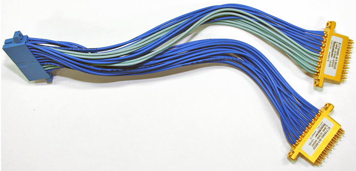
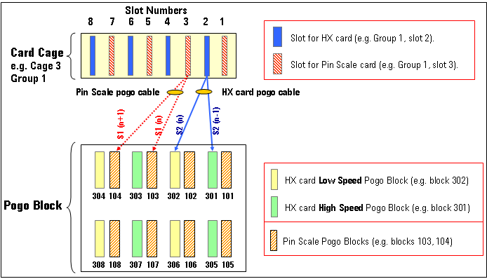
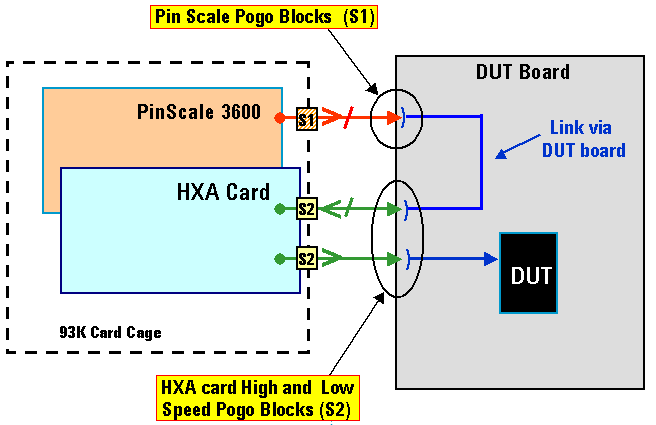

Pin Scale HX routing to pogo blocks
One HX card occupies one slot in the test head. Each card requires two pogo blocks (= 32 pins). A Y-shaped connection cable connects the card and the pogo blocks.

The routing for the Pin Scale 3600 and HX card pogo blocks is shown in the following figure:

The HX cards use the S2 pogo blocks and the Pin Scale 3600 cards supporting the HX card use S1 pogo blocks.
The HX card S2 pogo blocks are divided into "High-Speed" and "Low Speed" blocks.
The signal paths between the Pin Scale 3600 boards and the HX cards are routed via the DUT board.
This is illustrated in the figure below

When you design your DUT board, you must consider these interconnections.
For details on querying the routing information in an offline system refer to FXRT?.
Functional changes
- Introduced before SmarTest 6.3.2